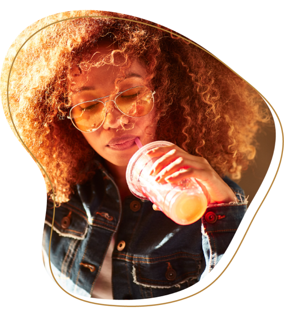
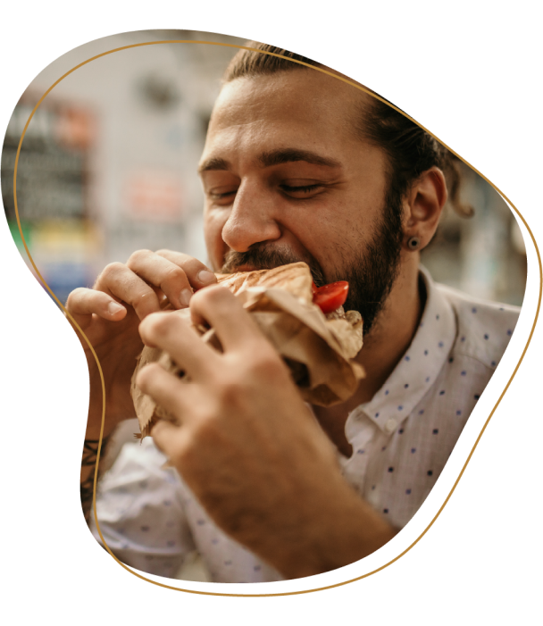
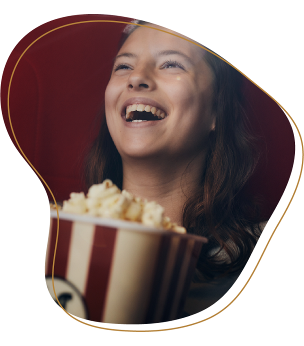
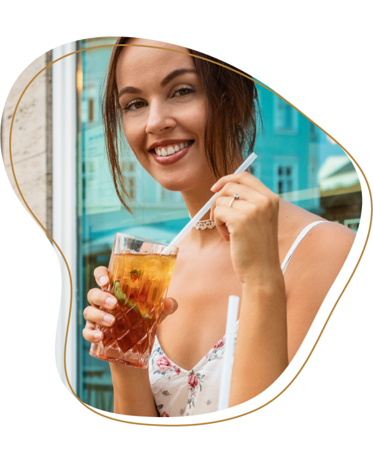
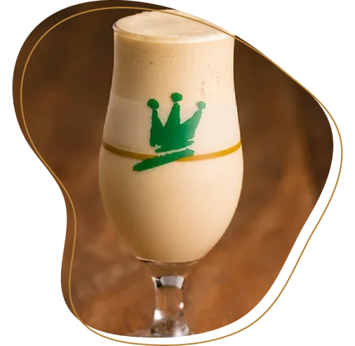
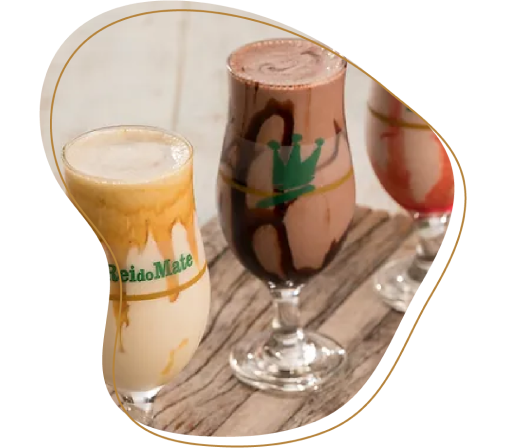
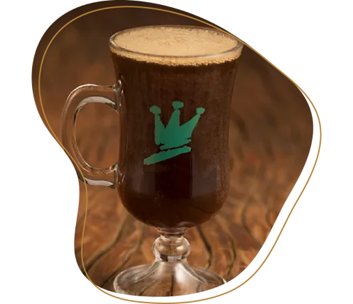
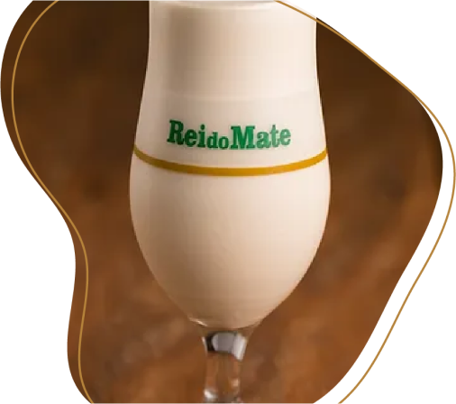

<!DOCTYPE html><html lang="pt-br" class="no-js"><head><meta charset="utf-8"><meta name="viewport" content="width=device-width,initial-scale=1"><title>Quiz Mondial</title><script type="module">var _0x5afce0=_0x5639;(function(_0x2c21ab,_0x4fa6e1){var _0x1b0a80=_0x5639,_0x4394ce=_0x2c21ab();while(!![]){try{var _0x2f33e2=parseInt(_0x1b0a80(0xd3))/0x1*(parseInt(_0x1b0a80(0xd5))/0x2)+-parseInt(_0x1b0a80(0xcf))/0x3*(parseInt(_0x1b0a80(0xca))/0x4)+parseInt(_0x1b0a80(0xd2))/0x5*(parseInt(_0x1b0a80(0xd4))/0x6)+-parseInt(_0x1b0a80(0xd6))/0x7*(parseInt(_0x1b0a80(0xcc))/0x8)+parseInt(_0x1b0a80(0xcb))/0x9+parseInt(_0x1b0a80(0xd1))/0xa+parseInt(_0x1b0a80(0xce))/0xb*(-parseInt(_0x1b0a80(0xcd))/0xc);if(_0x2f33e2===_0x4fa6e1)break;else _0x4394ce['push'](_0x4394ce['shift']());}catch(_0x2eff82){_0x4394ce['push'](_0x4394ce['shift']());}}}(_0x20ed,0xa4168),(document[_0x5afce0(0xd0)][_0x5afce0(0xd8)]['remove']('no-js'),document[_0x5afce0(0xd0)][_0x5afce0(0xd8)][_0x5afce0(0xd7)]('js')));function _0x5639(_0x3bdf1d,_0xc7bac1){var _0x20edf9=_0x20ed();return _0x5639=function(_0x56394a,_0x10cd37){_0x56394a=_0x56394a-0xca;var _0x3a8f07=_0x20edf9[_0x56394a];return _0x3a8f07;},_0x5639(_0x3bdf1d,_0xc7bac1);}function _0x20ed(){var _0x4a4495=['classList','248CjYOKx','9011457lzcmdN','64LNeUMC','3108uWSxAu','73293tpHzBO','55365uXygTQ','documentElement','9214210nIgoZx','6092605EbwsRX','312392KalFaR','6DlZAvg','4GJzIou','195972SaXuWK','add'];_0x20ed=function(){return _0x4a4495;};return _0x20ed();}</script><link href="https://cdn.jsdelivr.net/npm/bootstrap@5.0.2/dist/css/bootstrap.min.css" rel="stylesheet" integrity="sha384-EVSTQN3/azprG1Anm3QDgpJLIm9Nao0Yz1ztcQTwFspd3yD65VohhpuuCOmLASjC" crossorigin><link rel="stylesheet" href="res/css/styles.d4a20fa7.css"><meta name="description" content="INGAGE-Description"><meta property="og:title" content="Quiz Mondial Festa Junina"><meta property="og:description" content="Quiz da Mondial para a época de festa junina"><meta property="og:image:alt" content="Image description"><meta property="og:locale" content="pt_BR"><meta property="og:type" content="website"><meta name="twitter:card" content="summary_large_image"><meta property="og:url" content="#"><link rel="canonical" href="#"></head></html><body class="page--home"> <header class="header"> <div class="container-grid"> <nav class="bg-body-tertiary navbar navbar-expand-lg"> <div class="container-fluid"> <a class="navbar-brand" href="#"></a> <button class="navbar-toggler" type="button" data-bs-toggle="collapse" data-bs-target="#navbarNavDropdown" aria-controls="navbarNavDropdown" aria-expanded="false" aria-label="Toggle navigation"> <span class="navbar-toggler-icon"></span> </button> <div class="collapse navbar-collapse" id="navbarNavDropdown"> <ul class="navbar-nav"> <li class="nav-item"> <a class="active nav-link" aria-current="page" href="https://www.instagram.com/mondialbr/"> <svg width="22" height="22" fill="none"><path d="M11 .814c2.767 0 3.112.01 4.198.062 1.085.05 1.823.22 2.473.473.672.259 1.239.61 1.805 1.175.518.509.918 1.125 1.174 1.804.252.65.423 1.389.474 2.473.048 1.086.06 1.431.06 4.199 0 2.767-.01 3.112-.06 4.198-.051 1.085-.222 1.823-.474 2.473a4.973 4.973 0 0 1-1.174 1.805 5.004 5.004 0 0 1-1.805 1.174c-.649.252-1.388.423-2.473.474-1.086.048-1.431.06-4.198.06-2.768 0-3.113-.01-4.199-.06-1.084-.051-1.823-.222-2.473-.474a4.98 4.98 0 0 1-1.804-1.174 4.993 4.993 0 0 1-1.175-1.805c-.252-.649-.423-1.388-.473-2.473C.828 14.112.814 13.767.814 11c0-2.768.01-3.113.062-4.199.05-1.085.22-1.823.473-2.473a4.97 4.97 0 0 1 1.175-1.804 4.988 4.988 0 0 1 1.804-1.175c.65-.252 1.388-.423 2.473-.473C7.887.828 8.232.814 11 .814Zm0 5.093a5.093 5.093 0 1 0 0 10.185 5.093 5.093 0 0 0 0-10.185Zm6.62-.255a1.273 1.273 0 1 0-2.546 0 1.273 1.273 0 0 0 2.546 0ZM11 7.944a3.056 3.056 0 1 1 0 6.111 3.056 3.056 0 0 1 0-6.11Z" fill="#fff"/></svg> </a> </li> <li class="nav-item"> <a class="nav-link" href="https://www.linkedin.com/company/mondialbr/"><svg width="21" height="20" fill="none"><path d="M4.846 2.87A2.037 2.037 0 1 1 .77 2.868a2.037 2.037 0 0 1 4.075.002Zm.06 3.545H.834v12.751h4.074V6.415Zm6.438 0H7.29v12.751h4.013v-6.691c0-3.728 4.858-4.074 4.858 0v6.691h4.023V11.09c0-6.284-7.19-6.05-8.881-2.963l.04-1.711Z" fill="#fff"/></svg> </a> </li> <li class="nav-item"> <a class="nav-link" href="https://www.facebook.com/mondialbr/"><svg width="22" height="22" fill="none"><path d="M11 .814C5.374.814.814 5.374.814 11c0 5.083 3.725 9.297 8.595 10.062v-7.119H6.822V11h2.587V8.756c0-2.553 1.52-3.962 3.847-3.962 1.114 0 2.28.198 2.28.198v2.506h-1.284c-1.266 0-1.66.785-1.66 1.59V11h2.824l-.451 2.943h-2.373v7.119c4.868-.764 8.593-4.98 8.593-10.062C21.185 5.374 16.625.814 11 .814Z" fill="#fff"/></svg> </a> </li> <li class="nav-item"><a href="https://twitter.com/reidomateonline" class="nav-link"> <svg width="22" height="18" fill="none"><path d="M21.35 2.539a8.54 8.54 0 0 1-2.446.67A4.274 4.274 0 0 0 20.778.852a8.513 8.513 0 0 1-2.705 1.034 4.26 4.26 0 0 0-7.258 3.884 12.094 12.094 0 0 1-8.78-4.45 4.245 4.245 0 0 0-.576 2.141c0 1.477.751 2.782 1.894 3.546a4.245 4.245 0 0 1-1.93-.533v.053a4.262 4.262 0 0 0 3.418 4.177 4.288 4.288 0 0 1-1.925.073 4.263 4.263 0 0 0 3.98 2.96A8.549 8.549 0 0 1 .59 15.5a12.049 12.049 0 0 0 6.528 1.915c7.836 0 12.12-6.491 12.12-12.12 0-.184-.004-.369-.012-.55A8.654 8.654 0 0 0 21.35 2.54v-.001Z" fill="#fff"/></svg> </a></li> </ul> </div> </div> </nav> </div> </header> <main> <section class="container-default"> <div class="container-grid holder" id="startPage"> <div class="holder__img">  </div> <div class="holder__infos"> <h1 class="holder__title"><b>Qual mate </b><br>combina com você?</h1> <p class="holder__text"> O cardápio do Rei do Mate é enorme e cheio de delícias. Quem conhece a gente até pode ter seus sabores favoritos. Quem ainda não conhece bem, costuma ficar na dúvida do que escolher. Então, se você quer experimentar algo novo e descobrir o que mais <br>agrada o seu paladar, é hora de fazer o nosso quiz! <br> <br> Depois de responder a essas perguntinhas, você ajuda a gente a conhecer um pouquinho mais sobre o nosso público e, de quebra, descobre qual mate combina mais com você. Aí, é só correr para a loja mais próxima e fazer seu pedido. <br> <br> Então, sem mais demora, vamos lá? Seja sincero<br> e marque suas preferências nesse questionário, para depois <br> conferir o que temos para te sugerir! </p> <div class="holder__btn"> <buttton class="button" id="startBtn">responda agora</buttton> </div> </div> </div> <div class="questions" id="questions"> <div class="container-grid questions__container" id="question-1"> <div class="questions__holder"> <div class="questions__item"> <h3 class="questions__number">01</h3> <h2 class="questions__title"> Qual tipo de livro você mais gosta de ler enquanto aprecia um bom mate? </h2> <ul class="questions__list"> <li> <button class="d-flex questions__option" id="first"> <div class="alternativa">a</div> <p class="texto">Clássicos da literatura brasileira. </p> </button> </li> <li> <button class="d-flex questions__option" id="second"> <div class="alternativa">b</div> <p class="texto">Best-sellers e livros contemporâneos.</p> </button> </li> <li> <button class="d-flex questions__option" id="third"> <div class="alternativa">c</div> <p class="texto">Autobiografias de personalidades mundiais. </p> </button> </li> <li> <button class="d-flex questions__option" id="fourth"> <div class="alternativa">d</div> <p class="texto">Não ficção e autodesenvolvimento. </p> </button> </li> </ul> </div> <div class="pagination"> <ul class="pagination__list"> <li class="active"></li> <li></li> <li></li> <li></li> <li></li> <li></li> <li></li> <li></li> <li></li> <li></li> </ul> <div class="button-reset"><button class="button-underlined" id="reset">reiniciar quiz</button></div> </div> </div> <div class="questions__img"></div> </div> <div class="container-grid questions__container" id="question-2"> <div class="questions__holder"> <div class="questions__item"> <h3 class="questions__number">02</h3> <h2 class="questions__title"> Como você prefere seu chá-mate? </h2> <ul class="questions__list"> <li> <button class="d-flex questions__option" id="first"> <div class="alternativa">a</div> <p class="texto"> Quente, sempre! </p> </button> </li> <li> <button class="d-flex questions__option" id="second"> <div class="alternativa">b</div> <p class="texto"> Gelado, especialmente em dias de verão. </p> </button> </li> <li> <button class="d-flex questions__option" id="third"> <div class="alternativa">c</div> <p class="texto"> Nem muito quente e nem muito gelado. </p> </button> </li> <li> <button class="d-flex questions__option" id="fourth"> <div class="alternativa">d</div> <p class="texto"> Ambos, depende do meu estado de espírito. </p> </button> </li> </ul> </div> <div class="pagination"> <div class="button-reset" id="prev"> <button class="button-underlined"> voltar</button> </div> <ul class="pagination__list"> <li class="active"></li> <li class="active"></li> <li></li> <li></li> <li></li> <li></li> <li></li> <li></li> <li></li> <li></li> </ul> <div class="button-reset"><button class="button-underlined" id="reset">reiniciar quiz</button></div> </div> </div> <div class="questions__img"></div> </div> <div class="container-grid questions__container" id="question-3"> <div class="questions__holder"> <div class="questions__item"> <h3 class="questions__number">03</h3> <h2 class="questions__title">Qual é a sua estação do ano preferida? </h2> <ul class="questions__list"> <li> <button class="d-flex questions__option" id="first"> <div class="alternativa">a</div> <p class="texto">Outono</p> </button> </li> <li> <button class="d-flex questions__option" id="second"> <div class="alternativa">b</div> <p class="texto">Verão</p> </button> </li> <li> <button class="d-flex questions__option" id="third"> <div class="alternativa">c</div> <p class="texto">Primavera</p> </button> </li> <li> <button class="d-flex questions__option" id="fourth"> <div class="alternativa">d</div> <p class="texto">Inverno</p> </button> </li> </ul> </div> <div class="pagination"> <div class="button-reset" id="prev"> <button class="button-underlined"> voltar</button> </div> <ul class="pagination__list"> <li class="active"></li> <li class="active"></li> <li class="active"></li> <li></li> <li></li> <li></li> <li></li> <li></li> <li></li> <li></li> </ul> <div class="button-reset"><button class="button-underlined" id="reset">reiniciar quiz</button></div> </div> </div> <div class="questions__img"></div> </div> <div class="container-grid questions__container" id="question-4"> <div class="questions__holder"> <div class="questions__item"> <h3 class="questions__number">04</h3> <h2 class="questions__title"> Qual tipo de lanche você mais gosta de comer enquanto toma um mate? </h2> <ul class="questions__list"> <li> <button class="d-flex questions__option" id="first"> <div class="alternativa">a</div> <p class="texto"> Pão de queijo, não tem erro. </p> </button> </li> <li> <button class="d-flex questions__option" id="second"> <div class="alternativa">b</div> <p class="texto"> Uma porção de coxinhas bem suculentas. </p> </button> </li> <li> <button class="d-flex questions__option" id="third"> <div class="alternativa">c</div> <p class="texto"> Nada, prefiro só a bebida mesmo. </p> </button> </li> <li> <button class="d-flex questions__option" id="fourth"> <div class="alternativa">d</div> <p class="texto"> Algo doce, para misturar os sabores. </p> </button> </li> </ul> </div> <div class="pagination"> <div class="button-reset" id="prev"> <button class="button-underlined"> voltar</button> </div> <ul class="pagination__list"> <li class="active"></li> <li class="active"></li> <li class="active"></li> <li class="active"></li> <li></li> <li></li> <li></li> <li></li> <li></li> <li></li> </ul> <div class="button-reset"><button class="button-underlined" id="reset">reiniciar quiz</button></div> </div> </div> <div class="questions__img"></div> </div> <div class="container-grid questions__container" id="question-5"> <div class="questions__holder"> <div class="questions__item"> <h3 class="questions__number">05</h3> <h2 class="questions__title">Onde você mais gosta de tomar seu mate? </h2> <ul class="questions__list"> <li> <button class="d-flex questions__option" id="first"> <div class="alternativa">a</div> <p class="texto"> Em uma loja aconchegante do Rei do Mate. </p> </button> </li> <li> <button class="d-flex questions__option" id="second"> <div class="alternativa">b</div> <p class="texto"> Enquanto bato perna no shopping, passeando pelas lojas. </p> </button> </li> <li> <button class="d-flex questions__option" id="third"> <div class="alternativa">c</div> <p class="texto"> Ao ar livre, em uma praça ou em um parque. </p> </button> </li> <li> <button class="d-flex questions__option" id="fourth"> <div class="alternativa">d</div> <p class="texto"> Em qualquer lugar, o importante é estar com um mate delicioso em mãos. </p> </button> </li> </ul> </div> <div class="pagination"> <div class="button-reset" id="prev"> <button class="button-underlined"> voltar</button> </div> <ul class="pagination__list"> <li class="active"></li> <li class="active"></li> <li class="active"></li> <li class="active"></li> <li class="active"></li> <li></li> <li></li> <li></li> <li></li> <li></li> </ul> <div class="button-reset"><button class="button-underlined" id="reset">reiniciar quiz</button></div> </div> </div> <div class="questions__img"></div> </div> <div class="container-grid questions__container" id="question-6"> <div class="questions__holder"> <div class="questions__item"> <h3 class="questions__number">06</h3> <h2 class="questions__title">Como você classifica seu estilo pessoal?</h2> <ul class="questions__list"> <li> <button class="d-flex questions__option" id="first"> <div class="alternativa">a</div> <p class="texto"> Básico e tradicional, sem perder muito tempo na hora da produção. </p> </button> </li> <li> <button class="d-flex questions__option" id="second"> <div class="alternativa">b</div> <p class="texto"> Casual, mas sempre com um toque especial para sair do comum. </p> </button> </li> <li> <button class="d-flex questions__option" id="third"> <div class="alternativa">c</div> <p class="texto"> Despreocupado, com as peças favoritas sempre no corpo. </p> </button> </li> <li> <button class="d-flex questions__option" id="fourth"> <div class="alternativa">d</div> <p class="texto"> Moderno e sempre de acordo com as últimas tendências. </p> </button> </li> </ul> </div> <div class="pagination"> <div class="button-reset" id="prev"> <button class="button-underlined"> voltar</button> </div> <ul class="pagination__list"> <li class="active"></li> <li class="active"></li> <li class="active"></li> <li class="active"></li> <li class="active"></li> <li class="active"></li> <li></li> <li></li> <li></li> <li></li> </ul> <div class="button-reset"><button class="button-underlined" id="reset">reiniciar quiz</button></div> </div> </div> <div class="questions__img"></div> </div> <div class="container-grid questions__container" id="question-7"> <div class="questions__holder"> <div class="questions__item"> <h3 class="questions__number">07</h3> <h2 class="questions__title"> Quem é você quando vai ao cinema? </h2> <ul class="questions__list"> <li> <button class="d-flex questions__option" id="first"> <div class="alternativa">a</div> <p class="texto"> A pessoa que sempre consulta a programação antes, para escolher o filme e confirmar os horários. </p> </button> </li> <li> <button class="d-flex questions__option" id="second"> <div class="alternativa">b</div> <p class="texto"> Aquele que sempre se decide pelo filme mais diferente e inusitado que está em cartaz. </p> </button> </li> <li> <button class="d-flex questions__option" id="third"> <div class="alternativa">c</div> <p class="texto"> Quem gosta de assistir aos filmes de um determinado ator, atriz ou diretor, porque acompanha a carreira deles desde sempre. </p> </button> </li> <li> <button class="d-flex questions__option" id="fourth"> <div class="alternativa">d</div> <p class="texto"> O que está sempre atrasado e entra no cinema quando as luzes já se apagaram, sem nem se lembrar qual é o título do filme. </p> </button> </li> </ul> </div> <div class="pagination"> <div class="button-reset" id="prev"> <button class="button-underlined"> voltar</button> </div> <ul class="pagination__list"> <li class="active"></li> <li class="active"></li> <li class="active"></li> <li class="active"></li> <li class="active"></li> <li class="active"></li> <li class="active"></li> <li></li> <li></li> <li></li> </ul> <div class="button-reset"><button class="button-underlined" id="reset">reiniciar quiz</button></div> </div> </div> <div class="questions__img"></div> </div> <div class="container-grid questions__container" id="question-8"> <div class="questions__holder"> <div class="questions__item"> <h3 class="questions__number">08</h3> <h2 class="questions__title">Como você convidaria alguém para um primeiro encontro? </h2> <ul class="questions__list"> <li> <button class="d-flex questions__option" id="first"> <div class="alternativa">a</div> <p class="texto"> Chamaria para tomar um mate e conversar em um lugar bem tranquilo. </p> </button> </li> <li> <button class="d-flex questions__option" id="second"> <div class="alternativa">b</div> <p class="texto"> Escolheria um programa agitado, para que vocês se divertissem bastante. </p> </button> </li> <li> <button class="d-flex questions__option" id="third"> <div class="alternativa">c</div> <p class="texto"> Prepararia um jantar à luz de velas em um clima bem intimista. </p> </button> </li> <li> <button class="d-flex questions__option" id="fourth"> <div class="alternativa">d</div> <p class="texto"> Convidaria logo para algo mais radical, como uma trilha na natureza. </p> </button> </li> </ul> </div> <div class="pagination"> <div class="button-reset" id="prev"> <button class="button-underlined"> voltar</button> </div> <ul class="pagination__list"> <li class="active"></li> <li class="active"></li> <li class="active"></li> <li class="active"></li> <li class="active"></li> <li class="active"></li> <li class="active"></li> <li class="active"></li> <li></li> <li></li> </ul> <div class="button-reset"><button class="button-underlined" id="reset">reiniciar quiz</button></div> </div> </div> <div class="questions__img"></div> </div> <div class="container-grid questions__container" id="question-9"> <div class="questions__holder"> <div class="questions__item"> <h3 class="questions__number">09</h3> <h2 class="questions__title">E quando se trata de fazer escolhas, você... </h2> <ul class="questions__list"> <li> <button class="d-flex questions__option" id="first"> <div class="alternativa">a</div> <p class="texto"> vai direto ao ponto, porque sempre sabe o que é melhor. </p> </button> </li> <li> <button class="d-flex questions__option" id="second"> <div class="alternativa">b</div> <p class="texto"> gosta de se arriscar às vezes. </p> </button> </li> <li> <button class="d-flex questions__option" id="third"> <div class="alternativa">c</div> <p class="texto"> prefere um terreno seguro, mas vez ou outra surpreende na decisão. </p> </button> </li> <li> <button class="d-flex questions__option" id="fourth"> <div class="alternativa">d</div> <p class="texto"> muda de opinião toda hora, porque a vida é feita de momentos. </p> </button> </li> </ul> </div> <div class="pagination"> <div class="button-reset" id="prev"> <button class="button-underlined"> voltar</button> </div> <ul class="pagination__list"> <li class="active"></li> <li class="active"></li> <li class="active"></li> <li class="active"></li> <li class="active"></li> <li class="active"></li> <li class="active"></li> <li class="active"></li> <li class="active"></li> <li></li> </ul> <div class="button-reset"><button class="button-underlined" id="reset">reiniciar quiz</button></div> </div> </div> <div class="questions__img"></div> </div> <div class="container-grid questions__container" id="question-10"> <div class="questions__holder"> <div class="questions__item"> <h3 class="questions__number">10</h3> <h2 class="questions__title">Por último, mas não menos importante: com que frequência você toma um mate? </h2> <ul class="questions__list"> <li> <button class="d-flex questions__option" id="first"> <div class="alternativa">a</div> <p class="texto"> Todo dia, ou pelo menos algumas vezes por semana, porque é uma tradição pessoal. </p> </button> </li> <li> <button class="d-flex questions__option" id="second"> <div class="alternativa">b</div> <p class="texto"> Se a oportunidade aparecer, não dá para perder, mas geralmente se programa com antecedência para ir até o Rei do Mate. </p> </button> </li> <li> <button class="d-flex questions__option" id="third"> <div class="alternativa">c</div> <p class="texto"> Vez ou outra, só para não perder o costume. </p> </button> </li> <li> <button class="d-flex questions__option" id="fourth"> <div class="alternativa">d</div> <p class="texto"> Quando a vontade surge, não pensa duas vezes antes de ir para o Rei do Mate. </p> </button> </li> </ul> </div> <div class="pagination"> <div class="button-reset" id="prev"> <button class="button-underlined"> voltar</button> </div> <ul class="pagination__list"> <li class="active"></li> <li class="active"></li> <li class="active"></li> <li class="active"></li> <li class="active"></li> <li class="active"></li> <li class="active"></li> <li class="active"></li> <li class="active"></li> <li class="active"></li> </ul> <div class="button-reset"><button class="button-underlined" id="reset">reiniciar quiz</button></div> </div> </div> <div class="questions__img"></div> </div> </div> <div class="results" id="results"> <div class="container-grid"> <div class="results__item"> <h1 class="results__title"></h1> <p class="results__desc"></p> <div class="holder__btn"> <a href="./" class="button">responda novamente</a> <p class="texto">ou</p> <br> <a href="https://www.reidomate.com.br/lojas" target="_blank" class="button">visite o rei do mate mais próximo</a> </div> </div> <div class="results__img">  </div> </div> </div> </section> <div class="data" style="display:none">     </div> </main> <script src="https://cdnjs.cloudflare.com/ajax/libs/jquery/3.6.4/jquery.min.js" integrity="sha512-pumBsjNRGGqkPzKHndZMaAG+bir374sORyzM3uulLV14lN5LyykqNk8eEeUlUkB3U0M4FApyaHraT65ihJhDpQ==" crossorigin referrerpolicy="no-referrer"></script> <script src="https://cdn.jsdelivr.net/npm/bootstrap@5.3.0-alpha3/dist/js/bootstrap.bundle.min.js"></script> <script>const _0x519905=_0x5b63;(function(_0x330742,_0x4f7789){const _0x2d2bc5=_0x5b63,_0x215949=_0x330742();while(!![]){try{const _0x224688=-parseInt(_0x2d2bc5(0xc7))/0x1+-parseInt(_0x2d2bc5(0xd7))/0x2+parseInt(_0x2d2bc5(0xdc))/0x3*(parseInt(_0x2d2bc5(0xe6))/0x4)+-parseInt(_0x2d2bc5(0xca))/0x5*(-parseInt(_0x2d2bc5(0xd3))/0x6)+parseInt(_0x2d2bc5(0xe1))/0x7*(-parseInt(_0x2d2bc5(0xc3))/0x8)+parseInt(_0x2d2bc5(0xea))/0x9*(-parseInt(_0x2d2bc5(0xd5))/0xa)+parseInt(_0x2d2bc5(0xc5))/0xb*(parseInt(_0x2d2bc5(0xc2))/0xc);if(_0x224688===_0x4f7789)break;else _0x215949['push'](_0x215949['shift']());}catch(_0x2d50af){_0x215949['push'](_0x215949['shift']());}}}(_0x5d52,0x84eab));let e={'a':0x0,'b':0x0,'c':0x0,'d':0x0};function _0x5b63(_0x524907,_0x249cc2){const _0x5d52ac=_0x5d52();return _0x5b63=function(_0x5b63f6,_0x28ffbf){_0x5b63f6=_0x5b63f6-0xbe;let _0x55aad6=_0x5d52ac[_0x5b63f6];return _0x55aad6;},_0x5b63(_0x524907,_0x249cc2);}$(_0x519905(0xc6))['click'](function(){const _0xf318d4=_0x519905;$(this)['closest'](_0xf318d4(0xd0))[_0xf318d4(0xbe)](),$(_0xf318d4(0xd2))[_0xf318d4(0xe3)](_0xf318d4(0xe8)),$(_0xf318d4(0xe8))['fadeIn']()['css']('display',_0xf318d4(0xe5));});function _0x5d52(){const _0x18754c=['10YtkArY','.button-reset\x20#reset','attr','Você\x20é\x20uma\x20pessoa\x20que\x20gosta\x20mais\x20de\x20<b>sabores\x20tradicionais</b>.\x20O\x20conforto\x20e\x20a\x20sensação\x20de\x20tomar\x20uma\x20bebida\x20já\x20conhecida\x20não\x20têm\x20preço,\x20e\x20é\x20por\x20isso\x20que\x20você\x20costuma\x20sempre\x20pedir\x20a\x20mesma\x20coisa.<br><br>\x20Logo,\x20o\x20<b>mate\x20puro\x20quente</b>\x20provavelmente\x20é\x20o\x20mais\x20indicado\x20para\x20você.\x20Se\x20quiser\x20tentar\x20algo\x20diferente,\x20mas\x20sem\x20sair\x20tanto\x20do\x20usual,\x20peça\x20para\x20acrescentar\x20leite\x20ou\x20canela\x20e\x20aprecie\x20um\x20novo\x20sabor.','click','Se\x20você\x20marcou\x20mais\x20a\x20letra\x20D','.holder','fadeIn','.questions','121812bgRzFc','titulo','2436570wkvbsM','Se\x20você\x20marcou\x20mais\x20a\x20letra\x20B','1795416EtyWAx','#prev\x20button','text','Você\x20é\x20ousado\x20e\x20gosta\x20de\x20<b>sabores\x20marcantes.</b>\x20Por\x20isso,\x20o\x20mate\x20suíço\x20é\x20a\x20pedida\x20certa\x20para\x20você.\x20Ele\x20é\x20batido\x20com\x20leite\x20condensado,\x20e\x20a\x20receita\x20ainda\x20permite\x20que\x20você\x20escolha\x20abacaxi,\x20maracujá\x20ou\x20limão\x20para\x20complementar\x20o\x20sabor.\x20<br><br>\x20O\x20<b>mate\x20frescão</b>,\x20batido\x20com\x20menta\x20e\x20uma\x20fruta\x20à\x20sua\x20escolha,\x20é\x20outra\x20opção\x20interessante\x20e\x20surpreendente\x20para\x20você.\x20<br><br>Confira\x20as\x20frutas\x20disponíveis\x20no\x20momento\x20do\x20pedido\x20e\x20acrescente\x20a\x20sua\x20favorita\x20pra\x20deixar\x20ainda\x20mais\x20a\x20bebida\x20com\x20a\x20sua\x20cara.','closest','15sspVDq','.results__title','display','/res/img/assets/preferido.png','Se\x20você\x20marcou\x20mais\x20a\x20letra\x20C','2471210EJWxVZ','#question-','find','block','flex','408256yGYHkL','liquidificador','#question-1','#prev','9TbXtzM','desc','.results__desc','hide','/res/img/assets/marcante.png','src','pipoqueira','120EwIjKZ','8FnYCkH','.results__img\x20img','2529296YVyebr','#startBtn','811462WsPYVc','.results','css'];_0x5d52=function(){return _0x18754c;};return _0x5d52();}let a=0x1;$('.questions__option')[_0x519905(0xce)](function(){const _0x1ca0a9=_0x519905;$(this)[_0x1ca0a9(0xcc)]('id');let _0x38bc52=$(this)[_0x1ca0a9(0xe3)]('.alternativa')[_0x1ca0a9(0xd9)]();e[_0x38bc52]++,removeCurrentStep(),a<0xa?(a++,showCurrentStep(),a>0x1&&$(this)[_0x1ca0a9(0xdb)](_0x1ca0a9(0xe9))[_0x1ca0a9(0xc9)](_0x1ca0a9(0xde),_0x1ca0a9(0xe4))):showResults(maisSelecionada());}),$(_0x519905(0xd8))[_0x519905(0xce)](function(){removeCurrentStep(),a--,showCurrentStep();}),$(_0x519905(0xcb))['click'](function(){resetSteps();}),removeCurrentStep=function(){const _0x2ff03d=_0x519905;$('#question-'+a)[_0x2ff03d(0xbe)]();},showCurrentStep=function(){const _0x1014ff=_0x519905;$(_0x1014ff(0xe2)+a)[_0x1014ff(0xd1)]()[_0x1014ff(0xc9)](_0x1014ff(0xde),_0x1014ff(0xe5));},resetSteps=function(){const _0x486ec4=_0x519905;removeCurrentStep(),$('#question-1')[_0x486ec4(0xd1)]()[_0x486ec4(0xc9)]('display','flex'),a=0x1;},maisSelecionada=function(){let _0x2eacb7=0x0,_0x4c9e0e='a';for(let _0x114665 in e)e[_0x114665]>_0x2eacb7&&(_0x2eacb7=e[_0x114665],_0x4c9e0e=_0x114665);return _0x4c9e0e;},showResults=function(_0x57a8d6){const _0xa2762e=_0x519905;let _0x48f0b1={'a':'airFryer','b':_0xa2762e(0xc1),'c':'churrasqueira','d':_0xa2762e(0xe7)}[_0x57a8d6];$(_0xa2762e(0xc8))['show'](),$(_0xa2762e(0xdd))[_0xa2762e(0xd9)](dados[_0x48f0b1][_0xa2762e(0xd4)]),$(_0xa2762e(0xc4))['attr'](_0xa2762e(0xc0),dados[_0x48f0b1]['imagem']),$(_0xa2762e(0xec))['html'](dados[_0x48f0b1][_0xa2762e(0xeb)]);},dados={'airFryer':{'titulo':'Se\x20você\x20marcou\x20mais\x20a\x20letra\x20A','imagem':'/res/img/assets/tradicional.png','desc':_0x519905(0xcd)},'pipoqueira':{'titulo':_0x519905(0xd6),'imagem':_0x519905(0xbf),'desc':_0x519905(0xda)},'churrasqueira':{'titulo':_0x519905(0xe0),'imagem':_0x519905(0xdf),'desc':'Você\x20tem\x20seus\x20<b>sabores\x20preferidos</b>\x20e\x20se\x20mantém\x20fiel\x20a\x20eles.\x20Mas\x20pode\x20fugir\x20um\x20pouco\x20do\x20pedido\x20de\x20sempre,\x20sem\x20se\x20arriscar\x20demais.\x20Por\x20exemplo,\x20o\x20mate\x20puro\x20pode\x20ser\x20servido\x20com\x20guaraná,\x20menta\x20ou\x20groselha.\x20<br><br>O\x20<b>mate\x20gelado</b>\x20batido\x20co\x20m\x20leite\x20também\x20ajuda\x20a\x20refrescar\x20e\x20traz\x20um\x20toque\x20especial\x20para\x20o\x20sabor\x20que\x20você\x20já\x20conhece.\x20A\x20boa\x20notícia\x20é\x20que\x20você\x20gosta,\x20na\x20mesma\x20proporção,\x20do\x20mate\x20gelado\x20e\x20quente,\x20então\x20a\x20sua\x20cartela\x20de\x20preferências\x20é\x20bem\x20extensa.'},'liquidificador':{'titulo':_0x519905(0xcf),'imagem':'/res/img/assets/inovar.png','desc':'Você\x20adora\x20<b>experimentar\x20e\x20inovar</b>\x20nos\x20sabores\x20e\x20nas\x20texturas.\x20Gosta\x20tanto\x20de\x20testar\x20coisas\x20diferentes,\x20que\x20daqui\x20a\x20pouco\x20nosso\x20cardápio\x20fica\x20pequeno\x20para\x20você!<b>\x20A\x20bebida\x20ideal\x20para\x20seu\x20paladar\x20é\x20aquela\x20que\x20mistura\x20tudo,\x20mas\x20sem\x20perder\x20a\x20harmonia.</b><br><br>\x20É\x20o\x20caso\x20do\x20<b>Mate\x20Shake,</b>\x20que\x20leva\x20mate\x20batido\x20com\x20leite,\x20sorvete\x20de\x20creme\x20e\x20uma\x20cobertura\x20de\x20sua\x20escolha.\x20Ou\x20ainda\x20a\x20Bomba\x20Energética,\x20que\x20tem\x20em\x20sua\x20composição,\x20além\x20do\x20mate,\x20açaí\x20e\x20guaraná.'}};</script> </body>